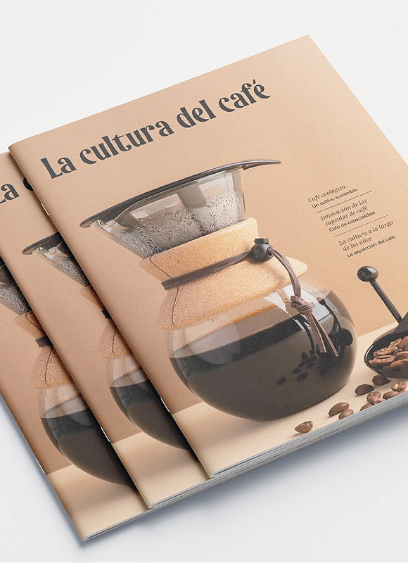
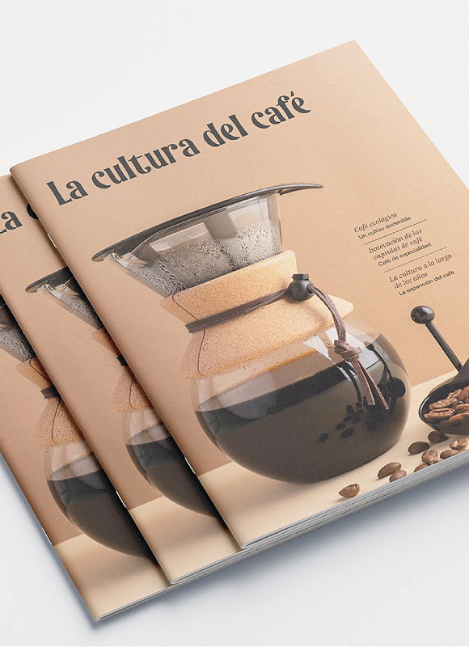

Pieza gráfica: Afiche
Fue realizado en el año 2023 para la materia taller de diseño II, en colaboración con Ornella Negro. En
esta serie de afiches se buscó utilizar como elemento principal el papel jugando con sus formas y
texturas. Para representar
a las diferentes obras del teatro “Red teatral sur”.
aplicaciones utilizadas

 

Pieza gráfica: Revista
Fue realizado en el año 2024 para la materia Espacio tipográfico III. Es una revista en formato A4. “La
cultura del café” se desarrolla sobre los orígenes del café, innovaciones y referentes en el rubro. La
información se acompaña de gráficos e infografías para lograr mayor compresión.
aplicaciones utilizadas


Pieza gráfica: Identidad visual
Fue realizado en el año 2023 para la materia taller de diseño III. “Cycross” es una marca dedicada a la
venta de motos, indumentaria y accesorios, con ubicación ficticia en las lomitas street, se muestra la
aplicación de la marca en las distintas superficies.
aplicaciones utilizadas